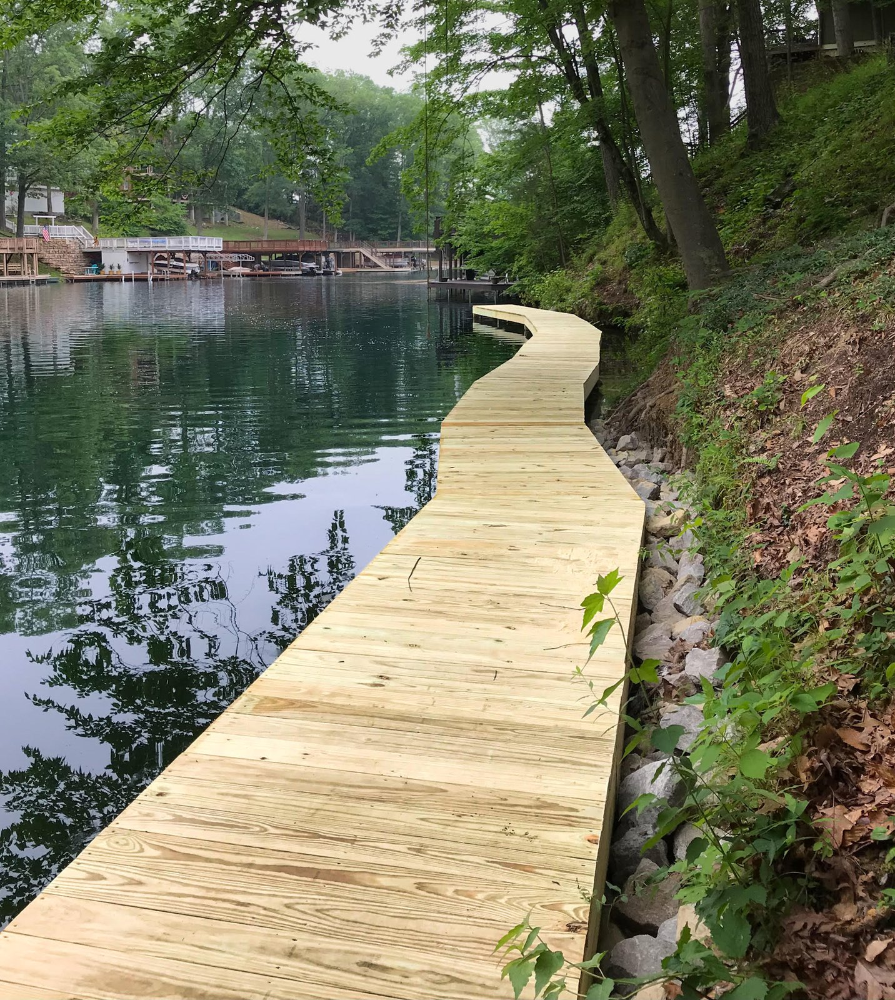
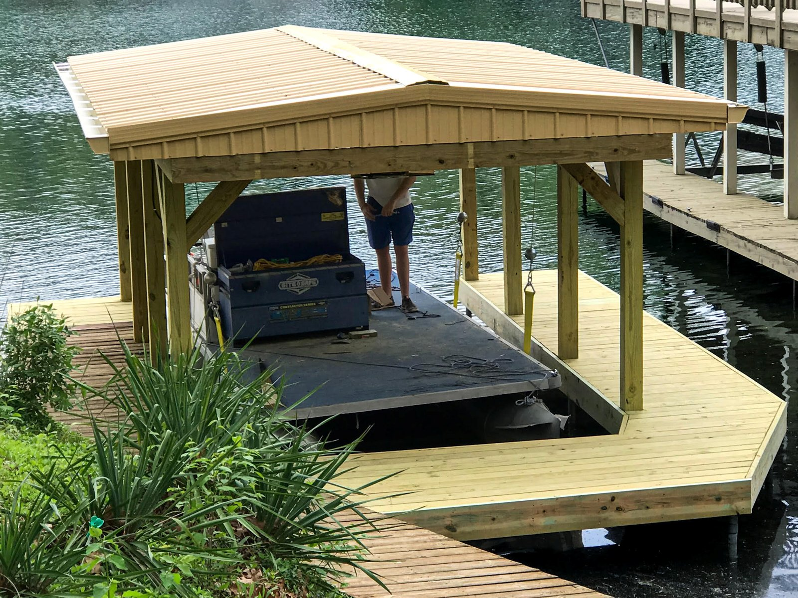

Professional Work
Finance systems architect. I design the financial data model, close process, and global multi-currency intercompany architecture that organizations run their accounting on — ~20 full-lifecycle implementations spanning ledger, procurement, banking & settlement, assets, and expenses.
Workday · Record to Report
Workday · Human Capital Management
Workday · Compensation
Kainos Group plc
Chicago, IL · 2025 – 2026Workday Financial Consultant — Implementation & Data Conversion
- Architected and deployed ~10 full-suite Workday systems spanning Financial Accounting, Payables, Receivables, Cash, Assets, & HCM.
- Built a Period Close dashboard and supporting automations that compressed period-end and year-end close cycles.
- Designed aggressive & conservative financial models for every client.
- Automated payroll accounting.
- Designed global multi-currency intercompany configuration — automating intercompany transactions and removing the need for manual elimination entries across entities.
Show 4 earlier rolesHide earlier roles
Huron Consulting Group, Inc.
Chicago, IL · 2023 – 2024Workday Financial Consultant — Implementation & Data Conversion
- Restructured Workday Grants Management for an R1 research university — rebuilt the financial-aid and sponsored-funding FDM around grant, scholarship, and loan hierarchies.
- Remediated post-production financials: built unearned-revenue recognition allocations and a calculated-field validation enforcing account posting rules on manual uploads.
- Designed the full FDM and configured endowments & fund accounting for a non-profit, producing conservative and aggressive statements via composite and matrix reporting.
- Built executive financial scorecards and dashboards, and created a dynamic scoping tool and Workday module ontology used as a build checklist across Launch implementations.
TopBloc, LLC
Chicago, IL · 2022 – 2023Workday Financial Consultant — Implementation & Data Conversion
- Delivered ~7 full-lifecycle Workday Financials and HCM implementations from design through go-live.
- Deconstructed legacy ledger accounts into FDM dimensions, reconciled opening balances, loaded data via EIBs, and built audit reports validating over $1B in accounting activity.
- Configured core financial business processes — Accounting Journal, Reversals & Adjustments, Allocations, and Period Close — with approval routing aligned to client controls.
- Led the solution design of a merger integrating two large healthcare enterprises' financial and HCM data models.
Plateplus, Inc. (currently Friedman Industries, Inc.)
East Chicago, IN · 2021 – 2022Trading and Purchasing Coordinator
- Co-managed the Hot & Cold Rolled Coil Steel futures derivatives trading desk via Chicago Mercantile Exchange.
- Negotiated contracts & Sourced Steel from every mill across the contiguous USA.
Indiana University Bloomington
Wylie Hall · Jan – Dec 2020Undergraduate Instructor
- Intermediate Microeconomic Theory (ECON-E321): Provided in-class assistance for more than 30 students, held weekly office hours, graded examinations, and worked directly alongside Dr. Gustavo Torrens to facilitate course instruction (optimization models, consumer & producer theory, Pigouvian taxation, deadweight-loss scenarios).
- Fundamentals of Economics for Business (ECON-B251): Tailored a curriculum and, without oversight, taught 3 classes/week to more than 100 students; worked with Dr. Gerhard Glomm to facilitate the main lecture (moral hazard, comparative advantage, Coase theorem, basic game theory, rational choice theory).
Workday Client Engagements
20clients11Financials7HCM2both13countries
View all 20 engagementsHide engagements
R1 University
Non-Profit (NGO)
Statewide Pension Fund
Healthcare
Hospitality — SaaS
Entertainment — Hollywood
Insurance — Software
Trucking & Logistics
Retirement & Investment Firm
Immigration Law Firm
Biotechnology
Global Financial Group
AAA Video Game Developer
ML Advertisement Software
Telemedicine
Bio-Pharmaceutical
Fintech — Cryptocurrency
Insurance Provider
Mining & Metals
Mining & Metals — Software
Engineering
Systems I built outside the ERP — genealogy, hardware, and timber structures.
Genealogy
Proprietary SystemDeveloped a proprietary system that has identified and algorithmically verified on the order of 1,700 direct-line ancestors with high accuracy and precision.
- Custom evidence model grading every parent–child link against original records, corroborated by autosomal shared-centimorgan matching and, on the direct paternal line, ~400 Y-chromosome SNPs.
- Every link scored against original records; impossible dates, places and relationships caught automatically.
- Ancestral Migrations: 499 Atlantic crossings and 1,798 lines of descent converging on one birthplace, over America as it stood each year.
- 219 dated state and territory boundaries from the Newberry Library’s Atlas of Historical County Boundaries, rendered so every ancestral event sits within the borders of its year.
- Custom Canvas renderer animating thousands of paths; no frameworks, no third-party requests.
- Watch the journey →
Custom Small-Form-Factor Workstation
HardwareSelf-assembled and tuned Mini-ITX build
| Motherboard | MSI | MPG B760I EDGE WF D5 ITX |
| CPU | Intel | Core i5-12600KF |
| GPU | NVIDIA | GeForce RTX 5070 Founders Edition — 12GB GDDR7, PCIe 5.0 |
| RAM | TeamGroup | 32GB DDR5 6400 RGB (White Kit) |
| Storage | Samsung | 2TB 990 PRO NVMe Gen4 SSD |
| CPU Cooler | be quiet! | Pure Rock LP |
| Fans | Arctic | P12 PWM 120mm PST ×2 |
| PSU | MSI | MAG A850GL 80+ Gold ATX 3.0 |
| Case | Antec | Stryker |
| OS | Linux | Omarchy (Arch + Hyprland) |
Waterfront Structures
CarpentryApprentice Carpenter · Indiana · Summer 2018
- Built a covered boat slip and a shoreline boardwalk on an Indiana lake as one of a four-person crew.
- Boardwalk set in angled segments that follow the bank's contour above the riprap.
- Boat slip framed in braced timber under a gable metal roof, with lift cables for the boat.


Scholarship
Indiana University
Bloomington, IN · May 2021Bachelor of Arts, Economics — College of Arts & Sciences
Honors Area Certificate, Liberal Arts and Management (LAMP) — Kelley School of Business & Philosophy
- GPA: 3.567 / 4.000
- Student of Allen William Wood — existentialism & the forefront American philosopher of German Idealism, and Todd B. Walker of Economics.
- Diploma CeDiD Keys — B.A. Economics: 21YX-78WV-B0L7 · LAMP: 216N-YOHT-BNLY
Library
- The Holy Bible — New International Version
- The Storm of Steel — Ernst Jünger
- Incerto — Nassim Taleb
- The Road to Serfdom — Friedrich Hayek
- The Gulag Archipelago — Aleksandr Solzhenitsyn
Show more selected volumesShow fewer
- The Odyssey — Homer, trans. Barry B. Powell
- Selected Writings — Friedrich Nietzsche
- Selected Writings — Karl Marx
- The Decline of the West — Oswald Spengler
- Fanged Noumena — Nick Land
- Governing the Commons — Elinor Ostrom
- The Selfish Gene — Richard Dawkins
- The Gene — Siddhartha Mukherjee
- Guns, Germs, & Steel — Jared Diamond
- A Farewell to Alms — Gregory Clark
- 12 Rules for Life — Jordan Peterson
- Watchmen — Alan Moore
- The Complete Batman Runs — Scott Snyder, Alan Moore & Grant Morrison
- The Magic Tree House (series) — Mary Pope Osborne
Athletics
| Diving | PADI | Open Water Diver · Issued Mar 2016 · Credential ID 16030K5528 |
| Triathlon | Ironman 70.3 | Steelhead · Total
7:17:56 Swim 1.9 km — 1:00:51 · Bike 90.6 km — 3:43:56 (Trek Domane AL 2, Gen 4) · Run 21.6 km — 2:18:57 |
| Skydiving | USPA | Pursuing A License · 6 jumps · 5:45 freefall |
| Expeditions | AllTrails | Hikes, bikes, & climbs — prospection logged on AllTrails |
Lineage
A lifelong genealogy project. Below are my 1,688 direct-line ancestors, traced across eighteen generations and rendered as a historically accurate migration converging on my birthplace.